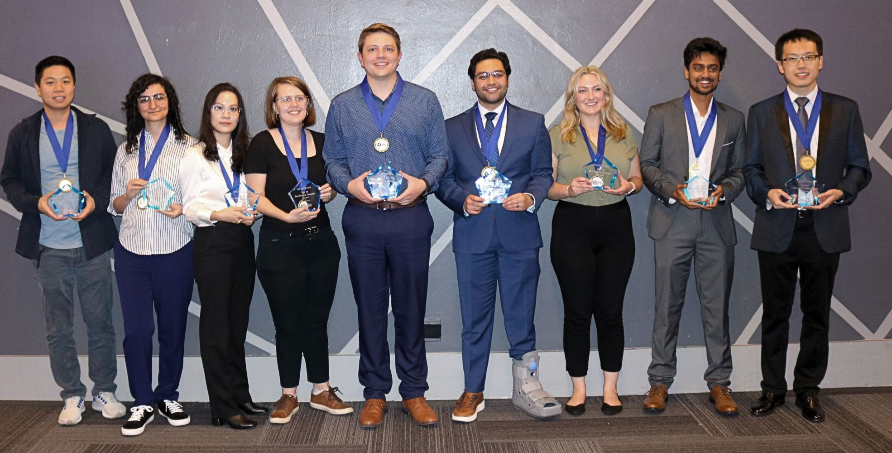

Our History
Since its inception in 2010, TechCon has grown from a small local meetup into a
world-renowned technology conference. Each year, it has expanded its reach,
welcoming thousands of participants, innovators, and industry leaders who gather
to share ideas and build the future of technology.

Our Mission
At TechCon, our mission is to foster innovation, collaboration, and education
within the global tech community. We believe in empowering people with the
knowledge and connections they need to create meaningful change in the world.

Notable Past Speakers
Our speakers are from successful multi-billion dollar companies and unicorns as well as startups with extensive traction in San Diego, Los Angeles, Orange County and the Bay Area. Through a blend of insightful keynotes, dynamic panel discussions, and interactive case studies, this conference will paint the vision of a connected and autonomous future.
Aadeel Akhtar

Dr. Aadeel Akhtar is the CEO and Founder of PSYONIC,
a company developing advanced bionic limbs that are accessible to humans and robots.
Dr. Akhtar received his Ph.D. in Neuroscience and M.S. in Electrical & Computer Engineering from the University of Illinois at Urbana-Champaign in 2016.
He received a B.S. in Biology in 2007 and M.S. in Computer Science in 2008 at Loyola University Chicago.
In 2021, he was named as one of MIT Technology Review’s top 35 Innovators Under 35 and America’s Top 50 Disruptors in Newsweek.
Amish Patel

Founder and Managing Director of Conduit Venture Labs, a venture studio focused at applying machine intelligence to real-world opportunities by leveraging sensory laden hardware and AI/ML.
Previously, Amish was head of product & design at Microsoft, contributing to delivering Windows Touch, Surface, XBOX One (Kinect /Accessories) and incubated a series of fitness wearables (Microsoft Band) and health data intelligence platforms (Microsoft Health).
He is the co-founder of Katalyst , the worlds first FDA cleared full-body electromuscle stimulation wearable, and more recently the CPTO at Proprio, an AI powered computer vision
surgical navigation system. His background is Computer Science (Human Computer Interaction – Neural Network) from the University of Toronto, and now resides in Seattle.
Sophia Lee

Aleksey is CEO of Natilus which he co-founded in 2016. Early in his career, he was the Lead Aerodynamicist at Piper Aircraft, helping to lead the department through programs including the PiperJet Altaire, the M600, and other future designs.
Aleksey later served as the aerodynamics lead on military UAV systems at Kratos Defense.
Through his consulting practice, Aleksey supported a multitude of General Aviation and UAS programs in aircraft design, performance, stability & control, flight testing, loads, CFD and certification.
Aleksey holds an Aerospace Engineering degree from Embry Riddle Aeronautical University.